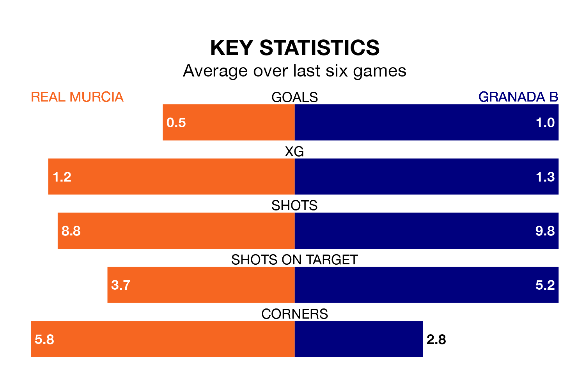

Struggling Granada B face Real Murcia away at the Estadio Nueva Condomina on Sunday looking to build on a win in their last league outing.
After securing all three points with a 1-0 victory over Atlético Madrid B on March 24, Granada B sit bottom of Primera Division RFEF Group 2.
They travel to play a Murcia side ninth in the standings, who also won their last match, 1-0 against Atlético Sanluqueño CF, on March 23.
With Manuel García Humanes between the sticks, Murcia can rely on one of the league's safest pair of hands. He has kept 10 clean sheets in his 19 appearances this season, and only one other 'keeper – Recreativo de Huelva's Rubén Ramos González – has been able to prevent the opposition scoring on more occasions in Primera Division RFEF Group 2.
In Granada B's net, Adri López has two clean sheets in 10 games. He has conceded a goal every 60 minutes, 60% more often than the 93 minutes between goals for García Humanes.
In the last 10 years, Murcia and Granada B have played each other on 14 occasions. Murcia won nine of them, Granada B three, and they drew twice.
On average, Murcia scored 1.6 goals and Granada B 0.9 in those matches.
Their last meeting was on August 27, when Murcia won 2-1 away.
The home team are in mixed form in Primera Division RFEF Group 2, with two wins and a draw from their last six games.
With a win and a draw over that period, the visitors' form is worse – they have taken four points from 18, compared to Murcia's seven.
With 18 goals in 29 games so far this season, Granada B are the league's third-lowest scorers with 0.6 goals per game. And they are conceding more than average, letting in 46 goals at a rate of 1.6 per game.
Murcia are also below average scorers, with 0.9 goals per game, compared to a league average of 1.1. They have conceded 1.1 goals per game.
Updated: 12:39 (UTC), 26/03/24